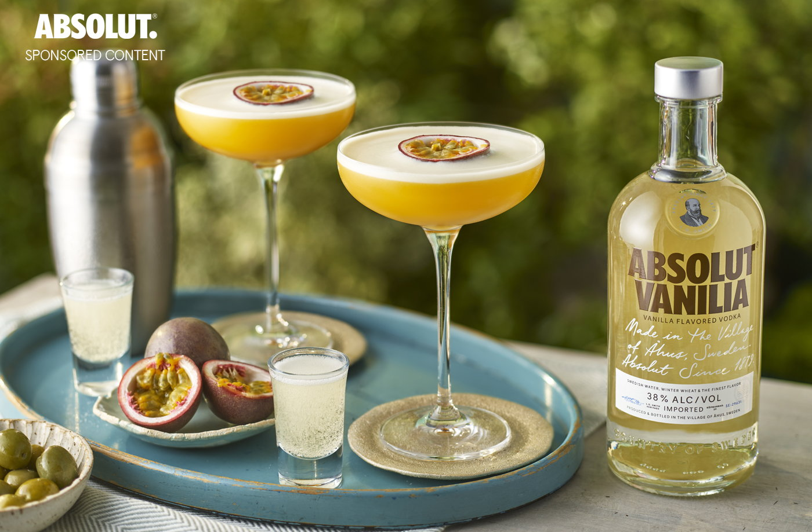

Welcome to GetLit, where the art of mixology meets elegance. We are devoted to guiding enthusiasts and connoisseurs alike on a journey through the world of cocktails. Our mission is to serve as your trusted companion in unraveling the secrets behind crafting the perfect concoctions. With a blend of expertise and a penchant for sophistication, we offer an array of resources and insights designed to elevate your mixology prowess. From classic blends to contemporary creations, allow us to be your compass in the realm of mixological excellence. Join us and embark on a delightful expedition to master the craft of cocktail creation.